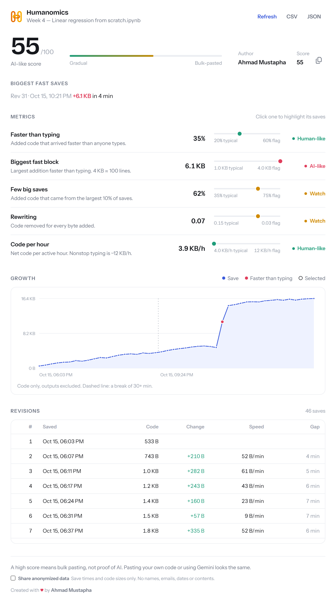

Typed, or pasted?
Humanomics reads a Colab notebook's revision history and shows, in seconds, whether it grew line by line or arrived in big finished blocks.

Two clicks. One answer.
A finished notebook looks the same whether it was written over a week or pasted in a minute. Its revision history doesn't.
Open a Colab notebook
Any notebook saved in Google Drive.
Click Humanomics
It reads the revision history for you through your existing Colab session.
Read the score
A 0–100 score, five metrics and the exact saves behind them.
Tied to how fast people really type.
Faster than typing
Share of added code that arrived faster than 1,000 bytes a minute.
Biggest fast block
The largest single addition that arrived that fast.
Few big saves
Share of added code from the largest 10% of saves.
Rewriting
Code removed for every byte added. Written code gets deleted and redone.
Code per hour
Net code added per hour of active work.
A fast typist enters about 200 characters a minute, roughly 12 KB in an hour of nonstop typing. Code that arrives five times faster didn't come from a keyboard.
Outputs don't count.
Colab saves charts and printed output inside the notebook file. Humanomics measures only the code and text in your cells.
Your notebooks stay yours.
- No account, sign-in or API key.
- Your code never leaves your browser.
- Anonymized statistics, with your consentSave times and code sizes only, asked once on first use. Read the privacy policy.
A reason to ask. Not a verdict.
A high score means the history looks like bulk pasting. It doesn't prove AI wrote the code: pasting your own code or using Colab's Gemini looks the same.
Walk me through this cell. How did you get here?